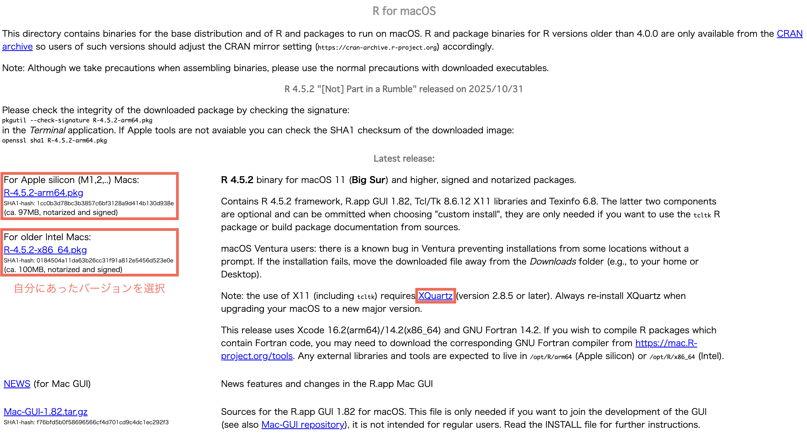
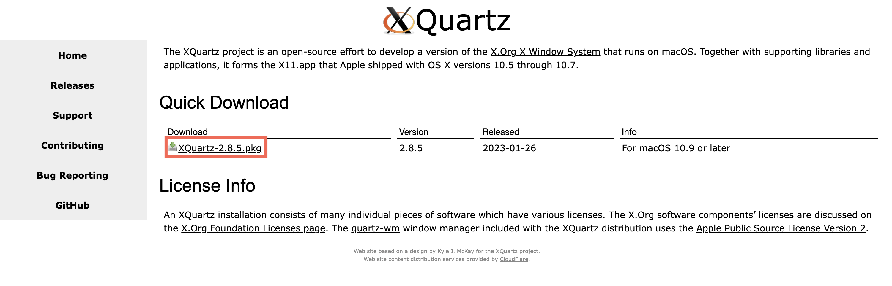

macOS インストールガイド
以下の手順に従って、Rをセットアップしてください。
1
チップの種類の確認
まず、お使いのMacが Intel チップか Appleシリコン (M1, M2, M3...) のどちらを使用しているかを確認する必要があります。
- 画面左上の アップルロゴ をクリックします。
- このMacについて を選択します。
- 「チップ」または「プロセッサ」の項目を確認してください。
確認ポイント:
"Apple M1/M2/M3..." = Appleシリコン
"Intel Core..." = Intel
"Apple M1/M2/M3..." = Appleシリコン
"Intel Core..." = Intel
2
Rのインストール
お使いのチップに対応するインストーラーをダウンロードしてください。

正しいファイルを選択してください:
- Appleシリコン (M1/M2/M3) の場合:
-arm64.pkgで終わるファイル (例:R-4.x.x-arm64.pkg) をダウンロードしてください。 - Intel の場合: "for Intel Macs" の下にある
.pkgで終わるファイル (例:R-4.x.x.pkg) をダウンロードしてください。
ダウンロードした .pkg ファイルを開き、インストーラーの指示に従ってください。
3
XQuartzのインストール
Rの作図機能などを使用するためにXQuartzが必要です。
Rのダウンロードページと同じページにリンクがあります ("XQuartz" という項目を探してください)。
XQuartz-x.x.x.dmg (または pkg) をクリックしてダウンロードし、インストールしてください。インストール後、再起動 (またはログアウト) が必要になる場合があります。
4
RStudioのインストール
RStudioはRを使用するためのインターフェースです。
"2: Install RStudio" までスクロールし、macOS用 (Universal) をダウンロードして、アプリケーションフォルダにドラッグしてください。

5
プロジェクトフォルダの準備
講義で使用するファイルを準備します。
-
教材ファイルのダウンロード
ファイルのダウンロードURLは、事務局からのメールに記載されています。
メールを確認し、リンクからZIPファイルをダウンロードしてください。 - ダウンロードしたZIPファイルを展開 (解凍) してください。
- 展開してできたフォルダをデスクトップに移動してください。
これが今回のプロジェクトのルートフォルダになります。 - RStudio を起動してください。
6
設定の構成
RStudioを使いやすく設定します。
- メニューバーの Tools > Global Options を開きます。
- General (基本) タブの設定:
"Workspace" セクションにある "Restore .RData into workspace at startup" のチェックを外し、
"Save workspace to .RData on exit" を "Never" に変更します。 - サイドバーの Code タブを選択します。
- "Use native pipe operator |> (requires R 4.1+)" のチェックが 外れている ことを確認してください。
- Apply をクリックし、OK をクリックします。
7
パッケージのインストール
インストールを高速化するために pak パッケージを使用します。
以下のコードをRStudioの Console ペインにコピー＆ペーストし、Enterキーを押してください。
1. pakのインストール:install.packages("pak")
pak::pkg_install(c(
"skimr",
"comorbidity",
"broom",
"tidyverse",
"here",
"openxlsx",
"tableone",
"gtsummary",
"broom.helpers",
"pacman"
))
インストールが完了するまでお待ちください。